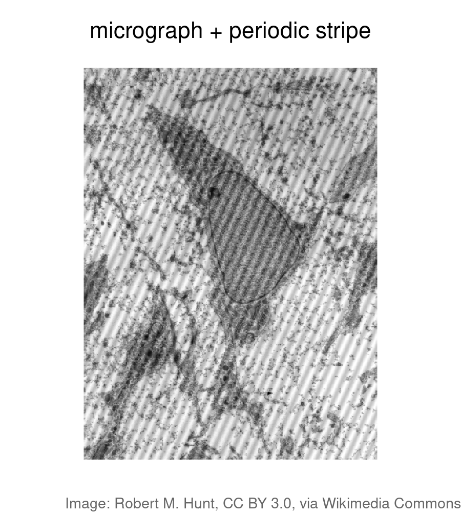
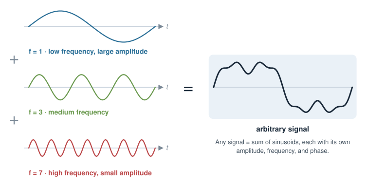
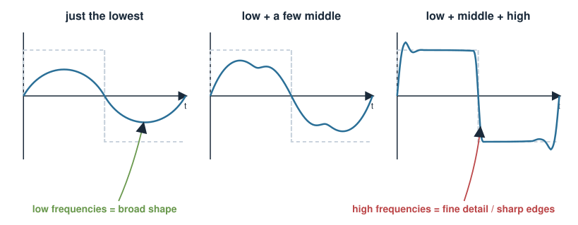
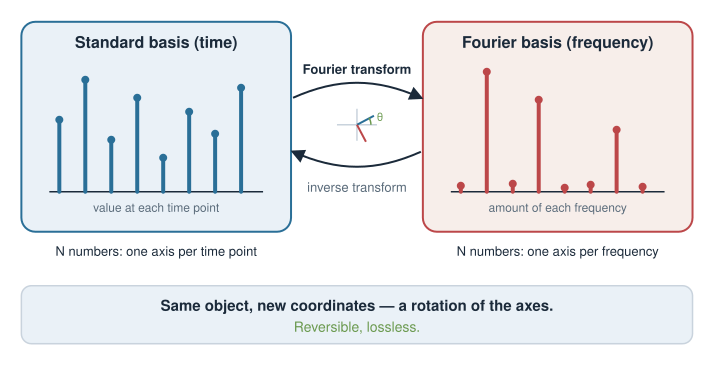
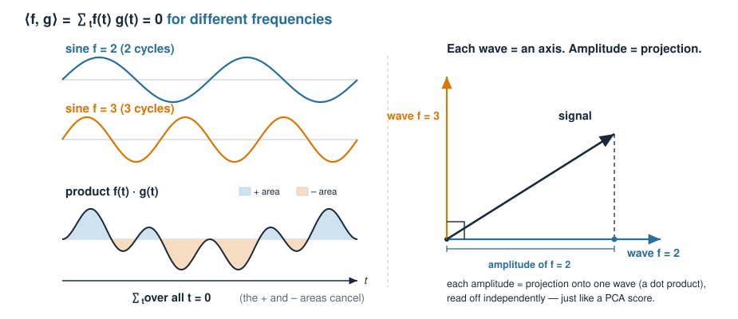
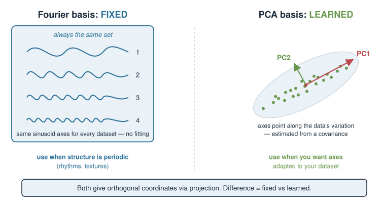
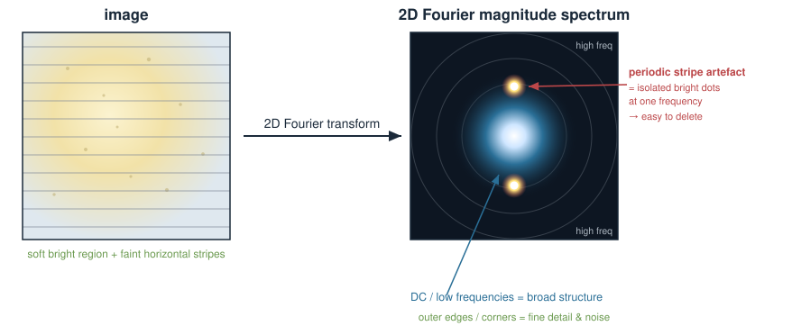
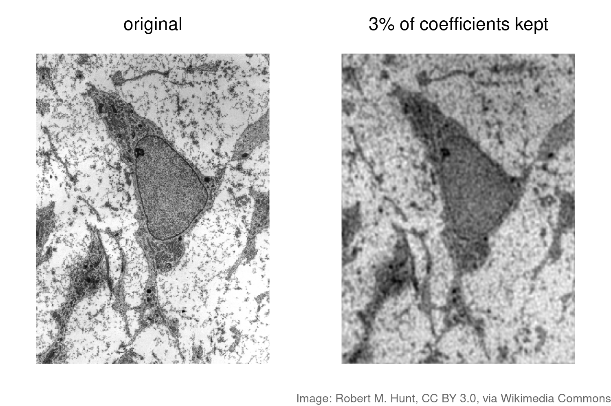
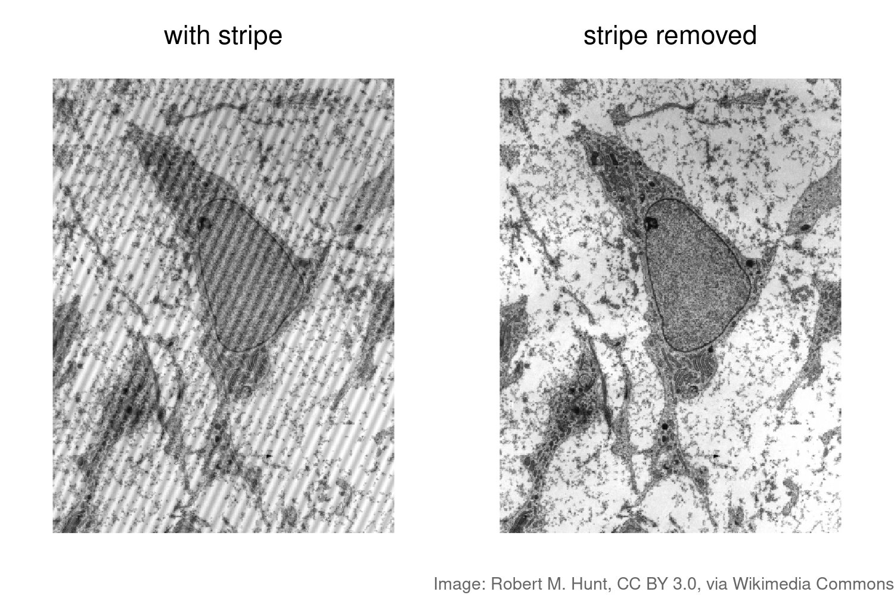
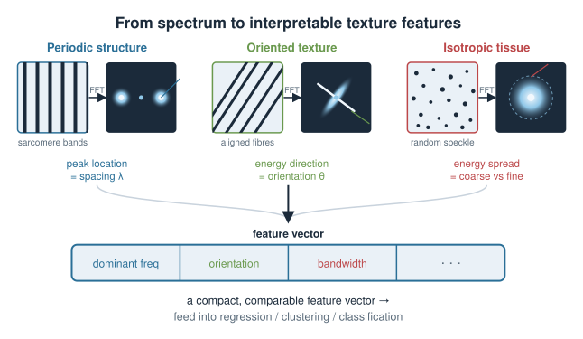

We have spent the course changing how we look at data. A matrix rotates the axes; PCA finds the axes along which the data spreads. Today we meet another change of viewpoint — one that has quietly powered a huge fraction of signal and image analysis in biology.
Any signal or image can be written as a sum of simple waves (sinusoids) of different frequencies. That recipe is the Fourier transform.
The transform is nothing exotic: it is a change of basis, exactly like the ones from Matrices as transformations and PCA.
The waves form an orthogonal basis. Fourier uses a fixed basis; PCA learns a data-driven one. Same linear-algebra machinery, different choice of axes.
Why biologists care: image compression, denoising, filtering, and feature extraction in microscopy and other signals.
This is a light, intuitive lecture — the goal is that you know this tool exists and understand why alternative basis functions are useful. No exam-level derivations today.
A biology picture first
Two everyday biological signals:
A microscopy image of a cell (below) — with a periodic stripe artefact from the detector laid over it.
A recording over time — say a fluorescence trace, an ECG-like electrophysiology signal, or an oscillating gene-expression readout — buried in noise.
In both cases the interesting structure and the unwanted structure live at different scales of variation: smooth trends, fine texture, a repeating rhythm, random speckle.
Question: is there a representation in which “slow smooth stuff”, “a specific repeating pattern”, and “fine noise” become separate, addressable pieces?
Yes — that representation is frequency. The Fourier transform sorts a signal by frequency.

The core idea: everything is a sum of waves
A single sinusoid is described by three numbers:
\[A\,\cos(2\pi f\, t + \varphi)\]
frequency\(f\) — how many cycles per unit time (or space): fast wiggle vs slow wave,
amplitude\(A\) — how tall the wave is (how much of that frequency is present),
phase\(\varphi\) — where the wave starts in its cycle.
The central claim of Fourier analysis:
Any signal can be built by adding up sinusoids of different frequencies, each with its own amplitude and phase.
The Fourier transform is the machine that, given a signal, tells you the amplitude and phase of every frequency — the recipe of waves.

Building a signal, one frequency at a time
Start with a slow wave. Add a faster one. Add a faster one still. With the right amplitudes, the sum sharpens into whatever shape you want.
Frequencies included
What the sum looks like
just the lowest
a single smooth swell
low + a few middle
a gentle wiggly curve
low + middle + high
sharp edges, fine detail resolved
Low frequencies carry the broad shape (the slow trends, the overall brightness of an image).
High frequencies carry the fine detail (sharp edges, texture — and, unfortunately, most noise).
This split — broad shape vs fine detail — is exactly what makes the frequency viewpoint so useful for biology.

The Fourier transform is a change of basis
Recall from Matrices as transformations and PCA: a basis is a set of directions you describe your data in, and changing basis just re-expresses the same object in new coordinates.
Standard viewpoint: a signal of length \(N\) is a list of \(N\) numbers — its value at each time point. That is coordinates in the standard basis (one axis per time point).
Fourier viewpoint: the same signal is a list of \(N\) numbers — the amount of each frequency. Coordinates in the Fourier basis (one axis per frequency).
\[\underbrace{\text{signal in time}}_{\text{standard basis}} \;\xrightarrow{\;\text{Fourier transform}\;}\; \underbrace{\text{signal in frequency}}_{\text{Fourier basis}}\]
No information is lost — you can transform straight back (the inverse transform). It is a rotation of the coordinate system, nothing more.

Why sinusoids? Because they are orthogonal (not for exam)
For a basis to give clean, unique coordinates, the basis directions should be orthogonal — perpendicular, non-overlapping — just like the orthogonal eigenvectors of a symmetric matrix in Eigenvalues & eigenvectors.
Sinusoids of different frequencies are orthogonal. The “dot product” of two whole signals is their overlap summed over all points:
\[\langle f, g\rangle = \sum_t f(t)\,g(t)\]
For two sinusoids of different frequencies this sum is zero — they do not overlap. So each frequency’s amplitude can be read off independently, without the others interfering.
Orthogonal basis \(\Rightarrow\) the amplitude of each wave is just a projection (a dot product) onto that wave.
This is the same projection idea as reading off PCA scores — only the axes differ.

Fixed basis vs data-driven basis
Fourier and PCA are cousins: both re-express data in an orthogonal basis. The difference is where the basis comes from.
Fourier basis
PCA basis
Basis vectors
fixed sinusoids, chosen in advance
learned from the data (eigenvectors of the covariance)
Depends on the data?
No — same axes for every signal
Yes — axes point along the data’s variation
Good at capturing
periodic / oscillatory structure
whatever directions the data actually vary in
Cost
none — no fitting needed
must estimate a covariance and diagonalise it
Use Fourier when you expect structure at particular frequencies (rhythms, textures, periodic patterns).
Use PCA when you want the basis to adapt to your dataset’s main axes of variation.

From 1D signals to 2D images
An image is a 2D signal — brightness as a function of two spatial coordinates. The idea extends directly: the basis functions become 2D waves (ripples across the image at a given orientation and spatial frequency).
Low spatial frequencies = broad regions of brightness (overall illumination, large structures).
High spatial frequencies = fine detail (edges, texture, and speckle noise).
A periodic artefact (a detector stripe, a grid pattern) shows up as a bright spot at one specific frequency — easy to see and easy to remove.
The 2D Fourier transform gives the spatial frequency spectrum of an image: a map of how much of each ripple the image contains.

Application 1: image compression
Most of the visible content of a natural image lives in its low frequencies. The high-frequency coefficients are often small and perceptually unimportant.
Recipe: transform to frequency space, keep the largest / lowest-frequency coefficients, throw the rest away, transform back.
Why it matters: microscopy produces huge data — light-sheet, whole-slide and high-content screens reach terabytes per experiment. Storing, moving and sharing it depends on compression.
This is the core idea behind JPEG, which uses a close Fourier relative, the discrete cosine transform (DCT), on small image blocks.
Below, pushed hard: only the largest 3% of the Fourier coefficients are kept. The cell is still recognisable, but fine detail is gone and blotchy “ringing” artefacts appear — compression is lossy.
Same lesson as truncating a PCA to its top components: keep the few coordinates that carry the signal, discard the rest.

Application 2: denoising and filtering
Random noise (speckle, electrical hiss) is spread across high frequencies; much real signal sits at lower frequencies. So:
High-pass filter — keep high frequencies: sharpens / enhances edges.
Band-pass / notch — keep or delete a specific band: isolate a rhythm, or remove one artefact frequency (e.g. a mains-hum line, a detector stripe).
Filtering is multiply the spectrum by a mask, then transform back. This is efficient because of the convolution theorem:
\[\text{convolution in space/time} \;\Longleftrightarrow\; \text{multiplication in frequency}\]
Below: the stripe from the first picture is a single frequency — just two coefficients in the 2D spectrum. Set them to 0 (a notch filter) and transform back.
Caveat: a mask removes everything at its frequencies, real detail included — filtering is a trade-off.

Application 3: feature extraction in microscopy
The frequency spectrum is itself a set of features describing structure and texture — useful input for downstream statistics or classification.
Periodicity detection: regular structures — sarcomere striations in muscle, a diffraction grating, a crystalline or lattice arrangement — produce sharp peaks in the spectrum. The peak location gives the spacing.
Texture / orientation: the spread and direction of energy in the 2D spectrum quantifies how fine and how oriented the texture is (e.g. aligned fibres vs isotropic tissue).
Resolution assessment: how far out into high frequencies real signal extends is a proxy for the effective resolution of an image.
Turning an image into a handful of frequency-domain numbers gives a compact, comparable feature vector — which you can then feed into the very tools from earlier in the course.

In R: the transform in one function
Base R computes the Fourier transform with fft(). A tiny 1D demo (illustrative — not run here):
# a signal: a slow 3-cycle wave plus a fast 20-cycle wave, plus noisen <-256t <- (0:(n -1)) / n # n samples; frequency k is FFT bin kx <-sin(2*pi*3*t) +0.5*sin(2*pi*20*t) +rnorm(n, sd =0.2)X <-fft(x) # discrete Fourier transform (complex numbers)mag <-Mod(X) # magnitude = how much of each frequencymag <- mag[1:(n/2)] # keep the lower half (the rest is a mirror image)plot(mag, type ="h") # frequencies 3 and 20 are at R indices 4 and 21